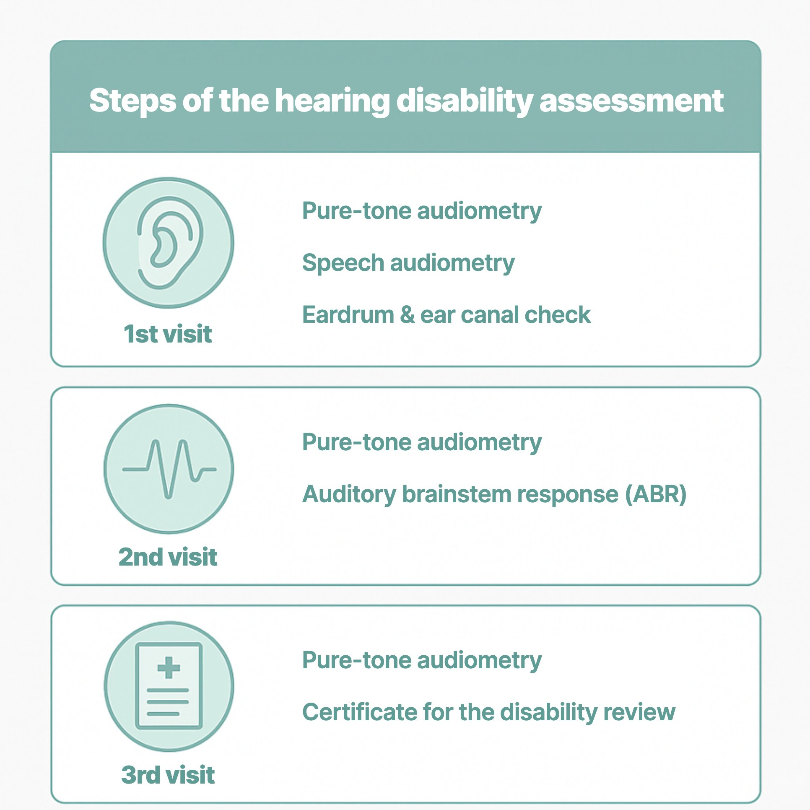
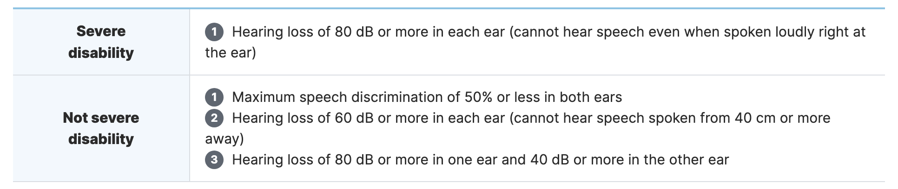

This article explains the tests and procedure for a hearing disability assessment in Korea. The review criteria have become stricter in recent years, so accurate information and preparation matter.
In this article 6 sections · 3 min read
Check before applying
- The assessment generally requires evidence that the hearing disability remains established after sufficient treatment, normally for at least six months. Bring previous hearing tests and treatment records, including records from other hospitals. The rules allow exceptions when permanence is clear or professionally established and documented. The absence of a test from six months ago does not by itself mean that everyone must wait another six months; the specialist and reviewing authority should confirm the timing for your case.
- A treatment history over the last 6 months makes it more likely the review will go smoothly.
- Hearing test records from other hospitals are accepted.
If these conditions aren't met, the review may be put on hold or rejected.
The tests take three visits
Under the disability assessment rules in place since 2020, a hearing disability application requires three clinic visits, 2–7 days apart.
First visit
- The eardrum and ear canal are checked with an endoscope.
- We check whether a hearing disability may apply.

If the first test results meet the hearing disability criteria, the 2nd and 3rd tests for the formal review follow.

Large differences between results risk rejection
In the review, consistency between pure-tone audiometry (PTA), auditory brainstem response (ABR) and speech audiometry is important.
Differences between pure-tone, speech and objective test results need clinical review and may lead to repeat testing or a request for further information. ABR or, where accepted, ASSR helps assess the reliability of the pure-tone results; it is not a stand-alone pass/fail test for disability registration. A difference between tests does not by itself prove intentional exaggeration. Final decisions are made by the reviewing authority using the complete records.
Costs and possible financial support
Disability-assessment tests and certificate fees may involve out-of-pocket charges. Ask the clinic for an itemised estimate and confirm which charges, if any, are covered for your circumstances. Separate government assistance with disability-assessment costs may be available to eligible applicants; check current eligibility and application requirements with your community service centre before testing. Paying for an assessment does not guarantee approval.
Hearing disability now has two levels
Hearing disability used to be graded from 2 to 6, but it has been simplified into two levels. The underlying criteria and benefits still apply.

Submitting documents and next steps
After the tests are complete:
- Submit the documents at your local community service centre (주민센터).
- You are notified of the review result.
- If a disability is recognised, the process for an assistive device (hearing aid) prescription and inspection confirmation follows, which is needed for hearing aid subsidies.
Applying for hearing disability status is not just a single test but a process that has to follow the right steps. As the criteria become stricter, careful, systematic testing matters.
Related: do you need hearing aids for mild or moderate hearing loss? · noise-induced hearing loss and work-injury hearing tests
This article is an English adaptation of a Korean post by Dr. OH JUNGHO. It is general information; eligibility and disability decisions are made by the Korean authorities (National Pension Service review), not by the clinic, and rules can change.